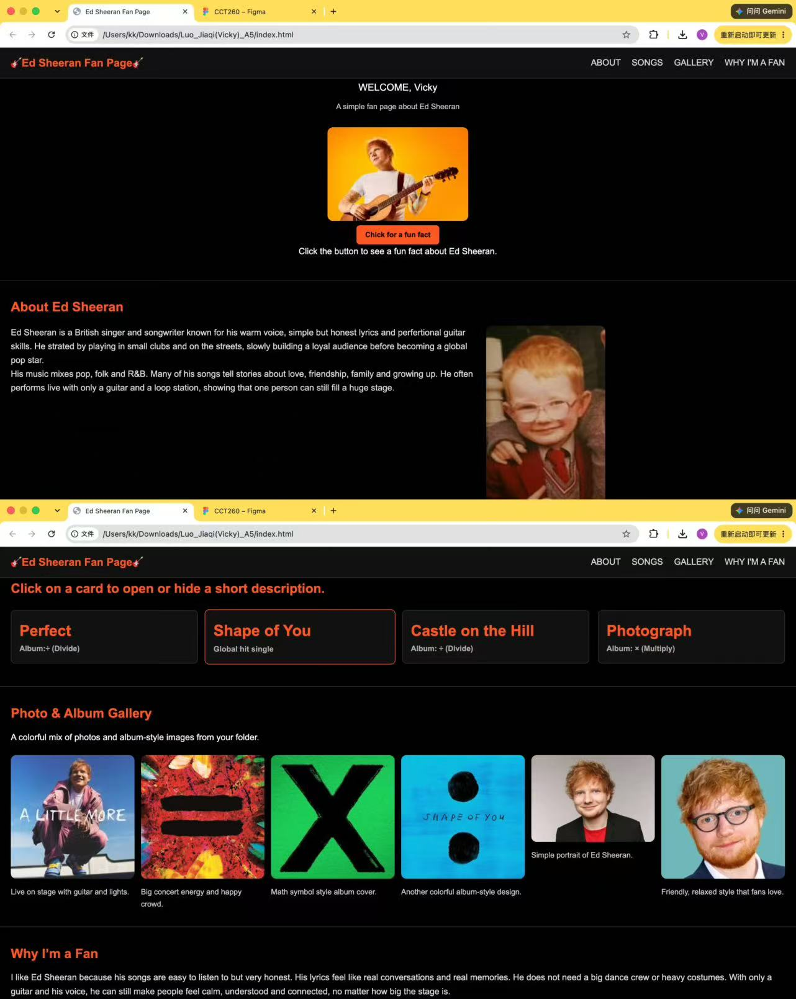
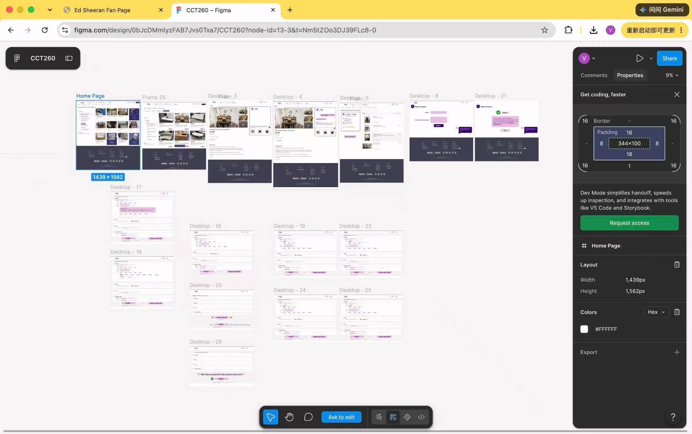
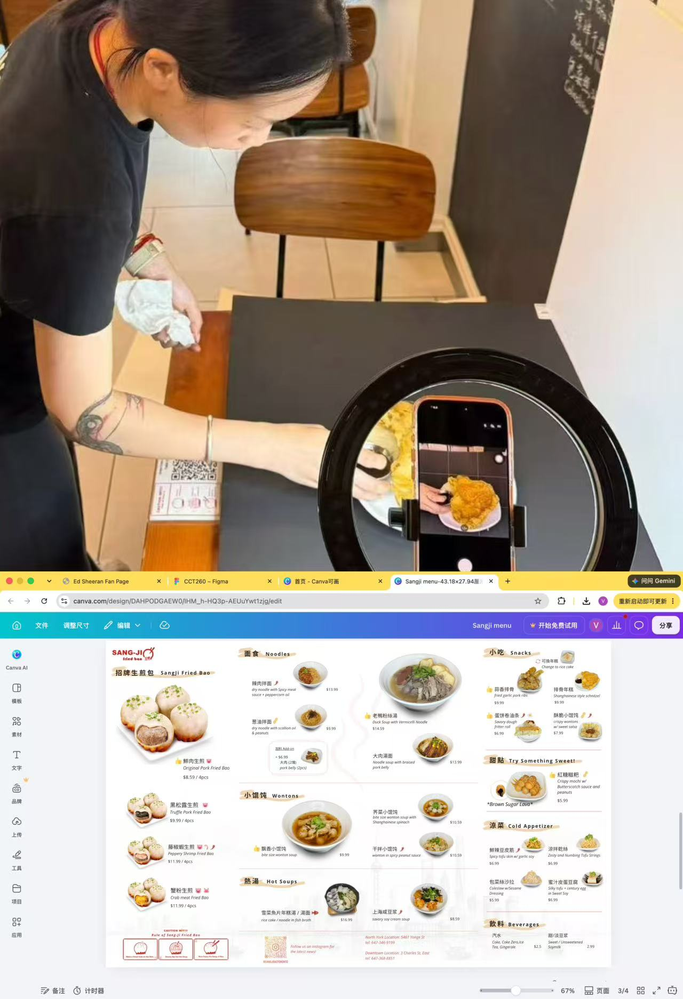

Ed Sheeran Fan Page Design
I used HTML and CSS to create this fan page for Ed Sheeran. This is a CCT260 project. It helped me practise webpage structure, styling, and page layout.
Skills: HTML, CSS
Welcome to my portfolio showcase! Here you can find some of my creative projects and learn more about me.
Hi, I'm Vicky, a DEM student at the University of Toronto Mississauga. I am interested in web development, UI/UX design, and visual communication. This portfolio will introduces three of my creative projects.

I used HTML and CSS to create this fan page for Ed Sheeran. This is a CCT260 project. It helped me practise webpage structure, styling, and page layout.
Skills: HTML, CSS

I redesigned the Kijiji App to improve user experience and accessibility. This project helped me understand user-centered design principles and implementation.
Skills: UI/UX Design, Figma, Wireframing, Prototyping

I have a part-time job at Sang-Ji, and a designed a menu for this restaurant. I took and edited all the photos myself and used Canva to create the design. I used clear sections and consistent colours to make the menu easy to read.
Skills: Canva, Photography, Photo Editing, Branding